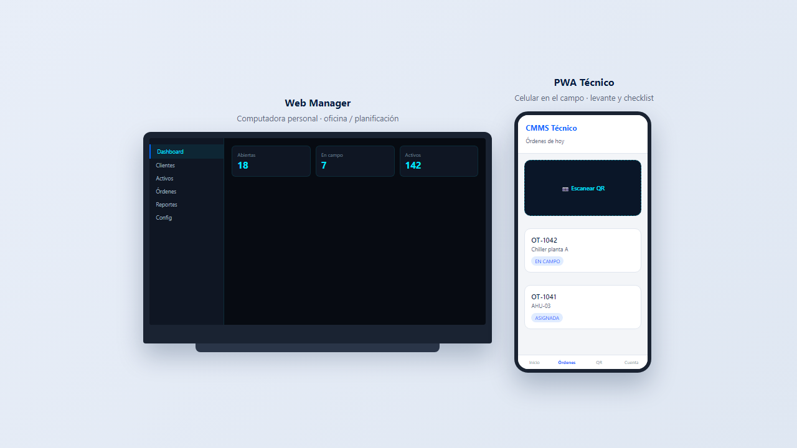
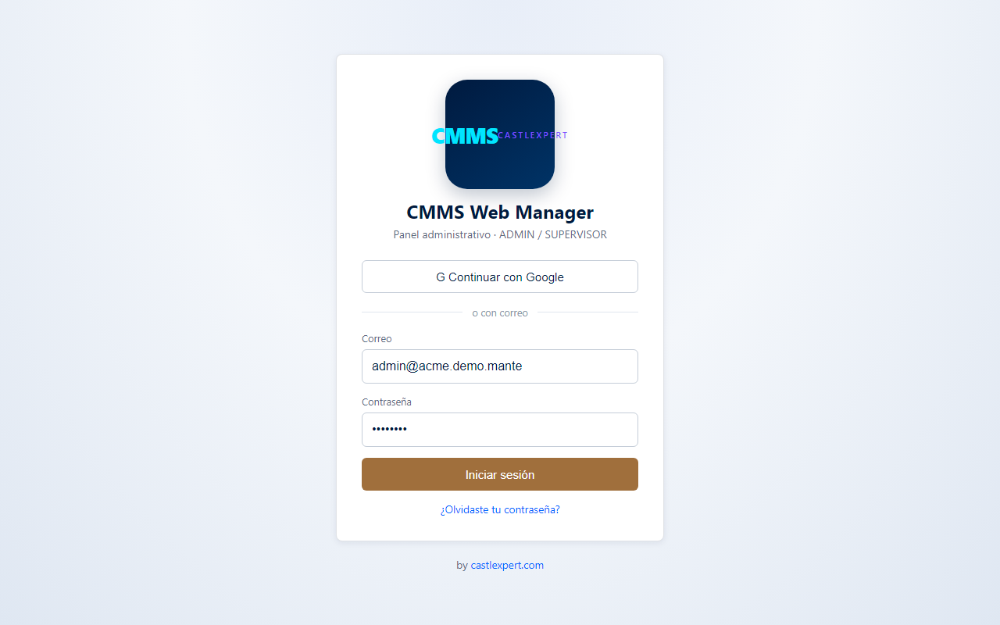
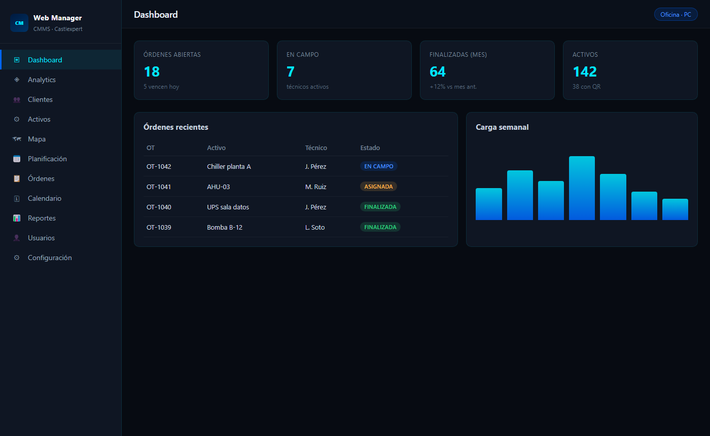
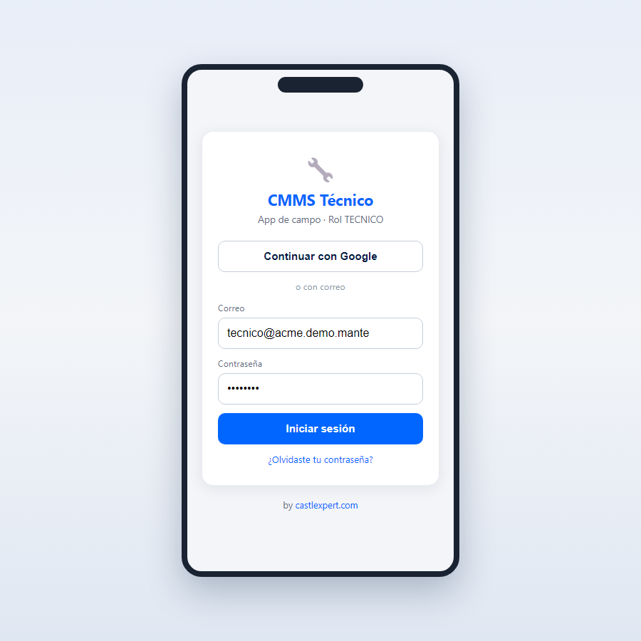
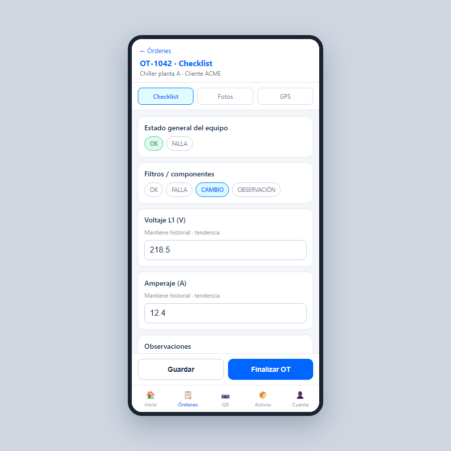
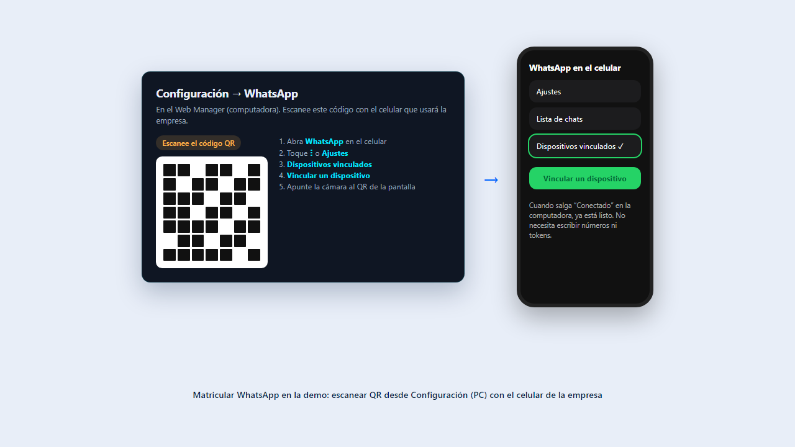
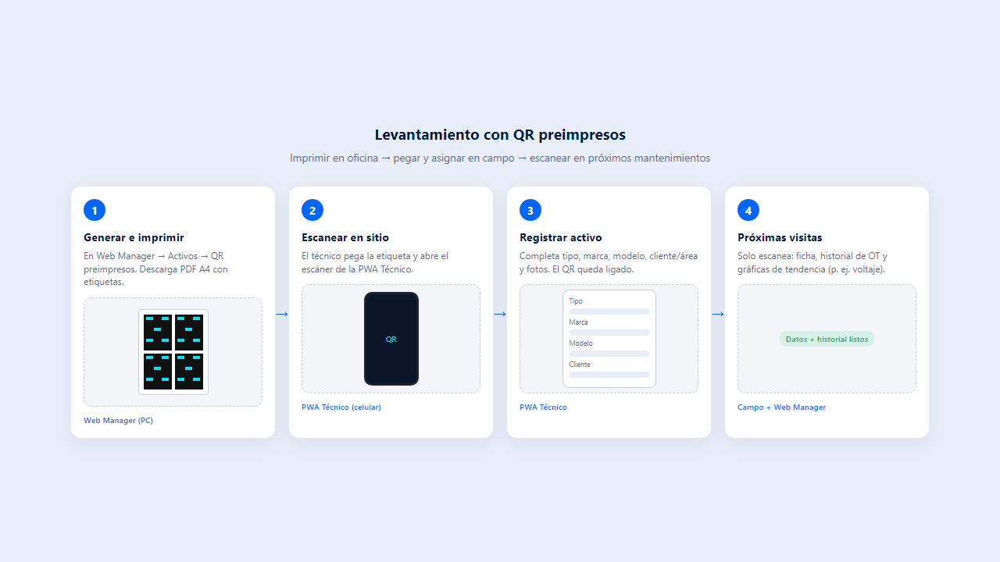
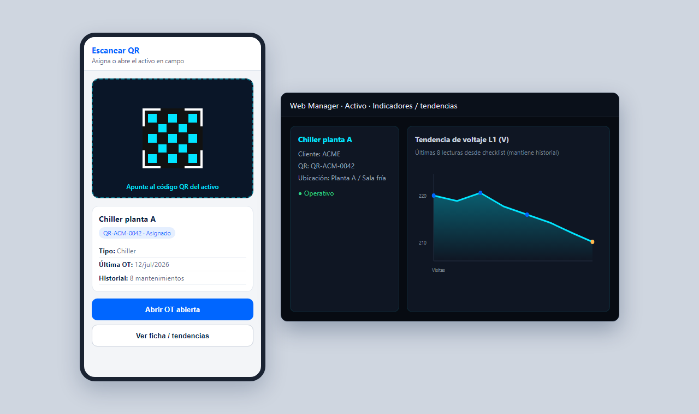

Guía del CMMS CastleXpert
Sistema multi-compañía de mantenimiento: la oficina trabaja en el Web Manager (PC) y el técnico en cmms-tech (celular). Incluye demos, WhatsApp por empresa, QR de activos y tendencias.
1. Dos aplicaciones, un sistema
El Web Manager se usa en una computadora personal. cmms-tech se usa desde el celular en el campo (levante de activos y checklist de órdenes).

| Aplicación | Quién | Dispositivo | Para qué |
|---|---|---|---|
| Web Manager PC | Admin / Supervisor | Computadora | Clientes, activos, QR, planificación, OT, reportes, usuarios, branding, WhatsApp |
| cmms-tech Celular | Técnico | Teléfono en campo | Escanear QR, levantar activos, checklist, fotos, GPS y cierre de OT |
| Portal Cliente Opcional | Cliente final | PC o móvil | Consulta de activos e historial (solo lectura), si está activado |
2. Multi-compañía y quién ve qué
Cada empresa (compañía) tiene sus propios usuarios, activos, órdenes, tema visual, logo y WhatsApp. Los datos de una compañía no se mezclan con los de otra.
| Rol | Qué hace |
|---|---|
| Admin de la compañía | Administra su empresa: usuarios, activos, OT, configuración, branding y vincular WhatsApp. |
| Técnico | Usa solo cmms-tech. Automáticamente ve la compañía a la que pertenece su usuario. |
| Super Admin (CastleXpert) | Panel SaaS: crea demos, entra a compañías, ve Analytics global. No es el usuario diario de la demo. |
3. Web Manager — uso en computadora
Panel administrativo. Inicie sesión en cmms.castlexpert.com.


| Módulo | Función |
|---|---|
| Dashboard | Resumen de órdenes y operación |
| Analytics | Solo Super Admin (accesos globales) |
| Clientes / Áreas | Estructura del servicio |
| Activos | Ficha, QR preimpresos, tendencias |
| Planificación / Órdenes / Calendario | Preventivos y OT |
| Reportes | PDF (y envío por WhatsApp si está vinculado) |
| Usuarios | Alta de técnicos y supervisores |
| Configuración | Plantillas, tipos, branding (tema/logo) y WhatsApp |
| SaaS / Compañías | Solo Super Admin |
4. cmms-tech — celular en el campo
App en el teléfono para trabajo en sitio. Acceso: cmms-tech.castlexpert.com.


Entrar con el usuario técnico
Use el correo técnico de la demo (ej. tecnico@…demo.mante).
Ver órdenes o escanear QR
Identifica el equipo y abre la orden o el levante.
Llenar checklist + fotos + GPS
Marque OK/FALLA, capture lecturas (voltaje, etc.) y evidencias.
Finalizar
Al tener señal, la app sincroniza con el Web Manager.
5. Matricular WhatsApp en la demo Paso a paso fácil
En la demo, el administrador (usuario admin) puede conectar el WhatsApp de la empresa para que el sistema envíe avisos (por ejemplo al asignar o cerrar una orden). No necesita ser experto en informática: es igual que vincular WhatsApp Web en una computadora.
¿Qué es “matricular” WhatsApp?
Significa vincular el celular de la empresa al sistema, escaneando un código QR desde la pantalla de la computadora. No hay que pegar tokens, ni números de API de Meta, ni instalar apps raras: solo WhatsApp normal en el celular.
- Una computadora con el Web Manager abierto (Chrome o Edge).
- El celular que usará la empresa para WhatsApp (con internet).
- WhatsApp ya instalado e iniciado sesión en ese celular.
- Usuario admin de la demo (no el técnico).

Pasos en la computadora
Entre al Web Manager
Abra
cmms.castlexpert.com
e inicie sesión con el usuario admin de su demo
(ejemplo: admin@suempresa.demo.mante).
Vaya a Configuración
En el menú de la izquierda, haga clic en Configuración.
Busque la sección “WhatsApp (WhatsApp Web)”
Ahí verá el estado (Desconectado / Conectando / Escanee el código QR / Conectado) y un botón Reiniciar sesión.
Espere el código QR en pantalla
En unos segundos aparece un cuadrado con el código. Si no aparece o se queda mucho rato en “Generando…”, pulse Reiniciar sesión y espere de nuevo (puede tardar unos segundos).
Pasos en el celular (WhatsApp)
Abra WhatsApp
Use el teléfono de la empresa (el que recibirá o enviará los avisos).
Entre a “Dispositivos vinculados”
Según el teléfono:
- Android: toque los tres puntos ⋮ → Dispositivos vinculados.
- iPhone: Ajustes → Dispositivos vinculados.
Toque “Vincular un dispositivo”
Se abrirá la cámara del celular para leer un código.
Apunte al QR de la computadora
Encuadre el código que se ve en Configuración. Cuando el vínculo sea correcto, en la PC el estado cambiará a Conectado y mostrará el número vinculado.
Cómo saber que quedó bien
- En Configuración aparece chip verde o estado Conectado.
- Se muestra el número vinculado.
- Mensaje de que está listo para notificaciones.
Si algo falla (soluciones simples)
| Qué ve | Qué hacer |
|---|---|
| Se queda en “Generando código QR…” | Pulse Reiniciar sesión, espere 10–20 segundos. Recargue la página si hace falta. |
| El QR aparece pero el celular no lo lee | Acerque o aleje el celular, mejore la luz de la pantalla, o reinicie sesión para un QR nuevo. |
| Se desconecta solo | En el celular, en Dispositivos vinculados, quite el dispositivo viejo y vuelva a vincular desde cero. |
| Quiere usar otro número | Pulse Reiniciar sesión en Configuración y escanee de nuevo con el otro celular. |
6. Levantamiento con QR preimpresos
Se imprimen etiquetas QR antes, se pegan al equipo y se asignan al registrar el activo. En próximos mantenimientos, con solo escanearlos ya se tiene el dato y el historial.

| Paso | Dónde | Qué se hace |
|---|---|---|
| 1. Generar e imprimir | Web Manager → Activos → QR preimpresos | Lote + PDF A4 de etiquetas |
| 2. Pegar y escanear | cmms-tech | Etiqueta en el equipo + cámara |
| 3. Asignar / levante | cmms-tech | Datos del activo; el QR queda ligado |
| 4. Futuros mantenimientos | cmms-tech + Web Manager | Un escaneo abre ficha, historial y tendencias |
7. Historial y gráficos de tendencia
Si un ítem de checklist (idealmente numérico) tiene “Mantiene historial”, cada lectura se acumula. Ejemplo: tendencia de voltaje.

Configurar en oficina
Configuración → plantilla → ítem NUMERO → “Mantiene historial”.
Capturar en cada OT
El técnico registra el valor en cmms-tech (ej. 218.5 V).
Ver la tendencia
En la ficha del activo: gráficos con las últimas lecturas (hasta 12).
8. Demos: links y usuarios que recibe
CastleXpert habilita una compañía demo con datos de ejemplo. Contacto: www.castlexpert.com.
Qué le envían al solicitar la demo
-
Link Web Manager (PC)
https://cmms.castlexpert.com -
Link cmms-tech (celular)
https://cmms-tech.castlexpert.com -
Usuario administrador — para oficina, WhatsApp, configuración
admin@<su-empresa>.demo.mante -
Usuario técnico — solo para el celular en campo
tecnico@<su-empresa>.demo.mante -
Contraseña — la que indique CastleXpert (a menudo
Demo123!en demos técnicas). - Vigencia — por defecto 14 días (se puede extender o convertir a producción).
Ciclo de vida de la demo
| Estado | Qué ocurre |
|---|---|
| Activa | Uso normal (ej. 14 días). |
| Extendida | Se agregan días de prueba. |
| Convertida | Pasa a compañía productiva. |
| Expirada | El login indica que venció; contacte castlexpert.com. Luego puede purgarse. |
*.demo.mante son de evaluación.
Para operación real solicite conversión en
www.castlexpert.com.
9. Enlaces útiles
Producto de CastleXpert. Solicite demo o soporte en el sitio web.